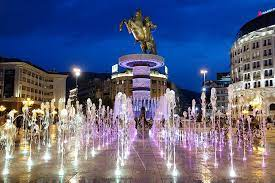

Skopje
Скопје — главен и најголем град во Македонија, кој воедно претставува административен, политички, стопански, културен, образовен и научен центар. Се наоѓа во северниот дел на државата, а во средишниот дел на Балканскиот Полуостров распространет на бреговите на реката Вардар. Камен мост се наоѓа крај реката Вардар. Македонски народен театар се наоѓа на булевар Св. Климент Охридски. Сули ан е тој сарај, кој се наоѓа во Старата чаршија во Скопје. МРТВ е приватна телевизиска станица во Македонија, а потоа Порта „Македонија“, Воин на коњ и Скопско кале се наоѓаат. Подоцна во 84 или 85 година императорот Домицијан основал колонија Флавија Скупи, град со римски самоуправни права кој бил најголем на просторот од Солун на југ до Дунав на север. Во тоа време Скопје доживува голем развој и станува град со свој бискуп. Во Втората светска војна Скопје повторно е окупирано од Бугарија, сојузник на нацистичка Германија. На 22 април 1941 година бугарската Петта армија го окупира Скопје и остана во градот сè до 9 септември 1944 година. На 13 ноември 1944 година борците од 42-та и 50-та народноослободителна дивизија на македонската војска и 16-та македонска бригада го ослободуваат Скопје од германската фашистичка окупација. Скопје е прв по големина град во Македонија според бројот на жители (2015 г.). На 6 август 2016 година Скопскиот Регион го зафати големо невреме, што резултира со силен ветар и полави. Во невремето животот го загубија 22 лица.На територијата на десетте општини кои ја сочинуваат административната единиција Град Скопје, се наоѓаат околу четириесетина села чиј број на жители влегува во вкупното население на Скопје, така што реалниот број на жители е помал. Во составот на Град Скопје влегуваат селата: Брњарци (395 ж.), Булачани (1.104 ж.), Гоце Делчев (1.405 ж.), Идризово (1.589 ж.), Колонија Идризово (451 ж.) Инџиково (3.343 ж.), Јурумлери (2.983 ж.), Раштак (367 ж.), Смилковци (345 ж.), Стајковци (3.532 ж.), Страчинци (1.185 ж.), Трубарево (2.669 ж.) и Црешево (1.278 ж.) во Гази Баба, Кучково (138 ж.), Никиштане (1.114 ж.) и Орман (461 ж.) во Ѓорче Петров, Горно Нерези (314 ж.) во Карпош, Долно Лисиче (2.440 ж.) во Аеродром, Драчево (8.641 ж.) и Усје (845 ж.) во Кисела Вода, Љубанци (928 ж.) и Љуботен (2.343 ж.) во Бутел, Горно Оризари (454 ж.) во Шуто Оризари и сите 22 села во Општина Сарај. Во сите овие села кои се дел од Град Скопје во 2002 година живееле 68.500 жители, од кои само 30.176 во Општина Сарај. Според оваа урбана и рурална демографска класификација на Град Скопје, во урбаните населби биле запишани 428.933 жители (2002 г.). Исто така поради брзата урбанизација и зголемување на своето население, Скопје постојано се проширува во својата територија, поради што десетина поранешни села веќе се споени со градот и претставуваат приградски населби на Скопје. Некои од нив се помалку, некои повеќе урбанизирани, а заедничкото за сите е што бележат брз развој и претставуваат привлечни имиграциски места, привлекувајќи население од цела Македонија. Такви поранешни села, а денес скопски населби претставуваат: Сингелич (23.915 ж.) во Гази Баба, Волково (6.750 ж.), Ново Село (8.349 ж.) и Оризари (15.637 ж.) во Ѓорче Петров, Бардовци (1.472 ж.) и Злокуќани (1.635 ж.) во Карпош, Долно Нерези (12.418 ж.) во Аеродром, Визбегово (2.817 ж.) и Радишани (9.123 ж.) во Бутел, gorno Оризари (1.550 ж.) во Шуто Оризари и Сарај (5.232 ж.) во Општина Сарај. Во овие приградски населби во 2002 година живееле 88.898 жители, што е 20,7 % од вкупното население во скопското урбано подрачје.